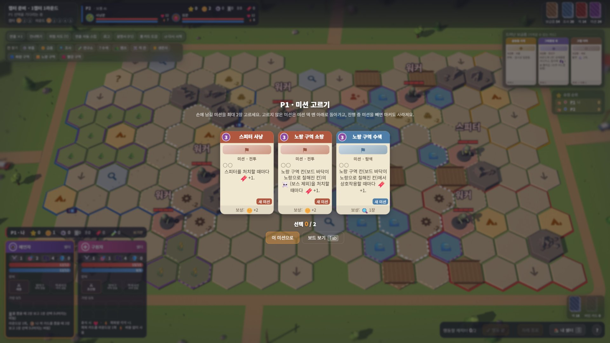
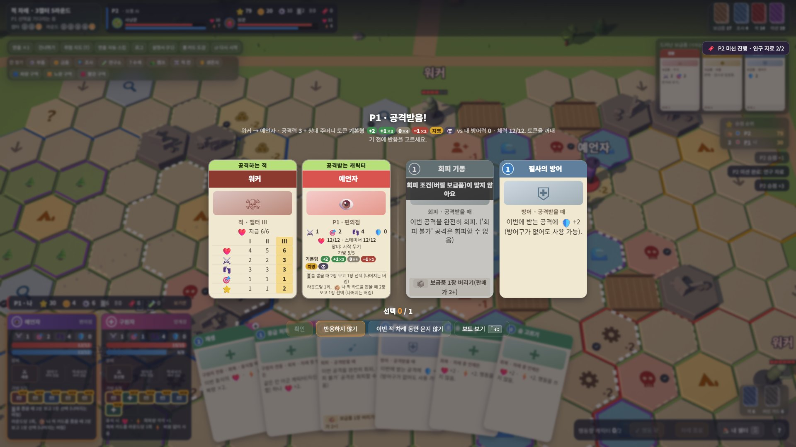
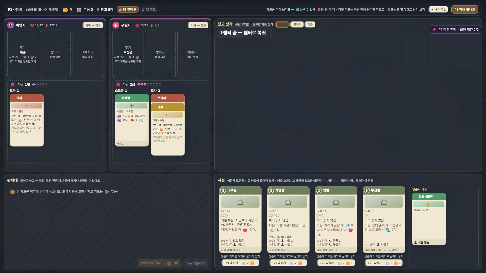
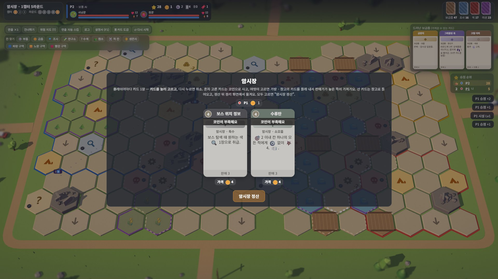
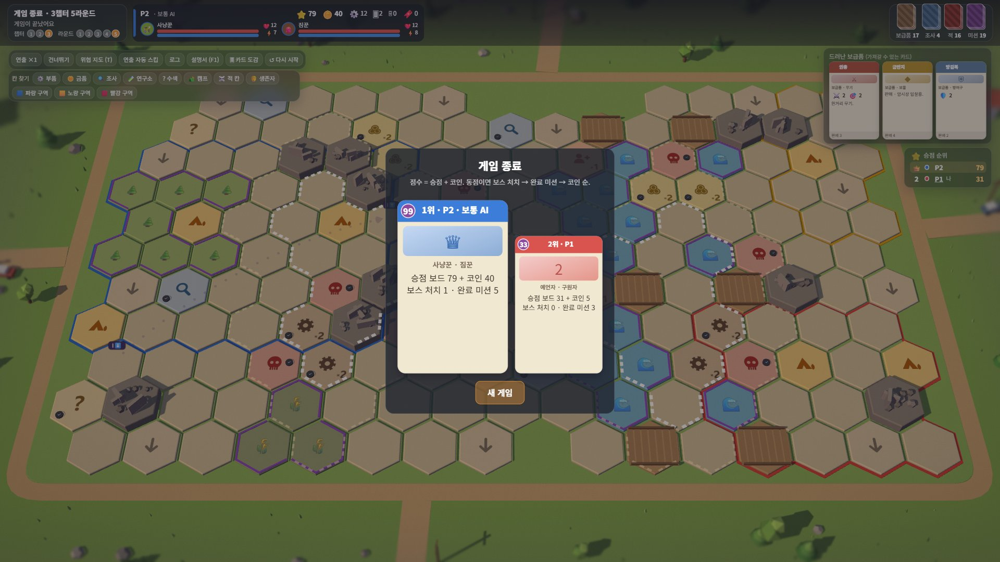

AI PROJECT
Extraction B (가칭): 규칙서에서 끝까지 플레이할 수 있는 게임으로
직접 기획한 보드게임 규칙을 Claude Code와 함께 실제 작업 18일 만에 정식 한 판을 문제없이 끝까지 플레이할 수 있는 3D 웹 게임으로 만든 개인 프로젝트입니다. 글을 읽기 전에 먼저 해 보실 수 있도록 데모를 맨 위에 두었습니다.
바로 플레이
AI 상대와 한 판을 끝까지 해 볼 수 있는 정식 판입니다. 실행하면 전체 화면으로 열립니다.
45~60분정식 판 (3챕터 × 5라운드)
약 15분짧은 판 (1챕터). 시작 화면의 "판 길이"에서 고릅니다
자동 저장창을 닫거나 새로 고침해도 시작 화면의 "이어 하기"로 계속할 수 있습니다
PC 브라우저(마우스와 키보드) 기준으로 만들어 휴대폰에서는 조작이 어렵습니다. 규칙 검증용으로 만든 개발 중 프로토타입이라 그래픽과 문구는 임시입니다 (2026년 10월 19일 버전).
시작하는 방법
- 시작 화면의 좌석은 기본으로 P1 사람(나) + P2 AI 쉬움입니다. AI 난이도는 쉬움, 보통, 높음 중에서 고를 수 있습니다.
- 판 길이에서 정식 판 또는 짧은 판을 고릅니다. 처음이라면 짧은 판을 추천합니다.
- 규칙 버전은 기본 행동 버전이 기본값입니다. 함께 들어 있는 카드 운용 버전(실험 중)은 검증과 개선에서 설명합니다.
- "무작위로 빠른 시작"을 누르면 미션 고르기, 처음 손패, 시작 칸에 캐릭터 놓기를 거쳐 첫 차례가 시작됩니다.
- 막히면 F1로 게임 안 설명서를 열거나, 오른쪽 아래 ? 버튼으로 칸 색과 단축키 안내를 볼 수 있습니다.
조작
- 캐릭터 보드행동할 캐릭터 고르기 (보드 위 말을 눌러도 됩니다)
- 흰색 칸이동 미리 보기, 다른 칸을 눌러 다시 고르기
- 빨간 적공격 창 열기
- Space행동 끝: 이동 확정 + 지금 칸 상호작용
- Esc고른 것 취소, 창 닫기
- T위협 지도 (적이 닿는 칸)
- S내 쉘터 보기
- 휠, 드래그보드 확대, 축소, 둘러보기
프로젝트 개요
| 게임 | 1~4인 PvPvE 익스트랙션 보드게임. 좀비로 무너진 도시에 캐릭터 2명을 내보내 물자를 챙기고, 모은 물자로 쉘터를 키웁니다. 보상이 큰 도시 중앙일수록 좀비와 다른 플레이어가 몰립니다. |
| 목표 | 규칙을 확정하기 전에, 재미가 있는지 직접 해 보고 숫자로 확인할 수 있는 플레이어블을 먼저 만들기 |
| 기간 | 2026년 9월 21일 ~ 10월 19일 중 실제 작업일 18일 (규칙서 정리 6일, 프로토타입 제작 12일). 첫 플레이어블은 9일째인 9월 30일에 나왔고, 나머지는 검증하고 다듬어 정식 판으로 만든 기간입니다. |
| 역할 | 게임 기획, 규칙과 밸런스 결정, 플레이 피드백, 작업 범위 판단은 직접 했고, 구현과 반복 실험은 Claude Code가 했습니다. 자세한 분담은 만든 방법에 있습니다. |
| 결과물 | 브라우저에서 끝까지 플레이할 수 있는 3D 웹 게임, AI 상대 3단계, 자동 테스트, AI 대전 밸런스 보고서, 규칙 A/B 비교 환경, 직접 수정용 맵 편집기 |
숫자로 보는 결과물
2026년 10월 19일 기준입니다.
18일실제 작업일. 첫 플레이어블은 9일째, 이후는 검증하고 다듬어 정식 판과 규칙 A/B 테스트까지
136건작업 이력으로 남긴 결정과 변경 (커밋 144개)
약 1만 5천줄게임 코드. 룰 엔진 약 4,500줄, AI 약 2,100줄, 화면 약 8,500줄
312개규칙 시나리오 테스트, 전부 통과. 카드 132장 전수 테스트도 문제 없음
150판규칙을 바꿀 때마다 돌리는 AI 대전 밸런스 보고서 1회 분량, 약 4분
3단계AI 상대 (쉬움, 보통, 높음). 높음은 상대 손패를 추정해 여러 경우를 시험해 보고 고릅니다
화면
데모에서 직접 볼 수 있는 장면입니다. 자동 진행 중에 찍어 P1의 선택도 AI가 했습니다.

내 차례: 3D 보드, 캐릭터 보드, 손패, 행동 바

챕터 시작: 미션 고르기

적에게 공격받을 때 반응 카드 고르기

챕터 끝 정비: 끌어다 놓기로 장비, 판매, 시설 관리

암시장: 원하는 카드를 동시에 골라 경쟁

게임 결과: 순위와 점수 구성